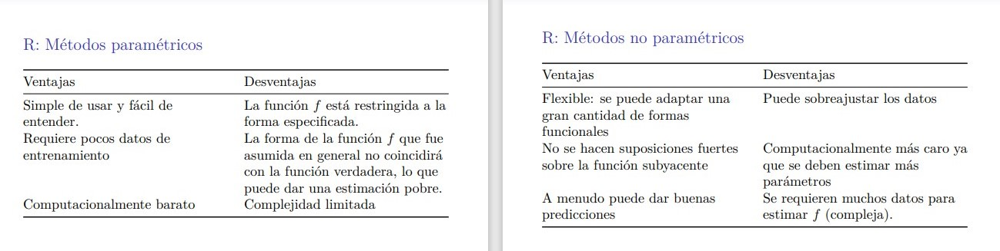

Apuntes de clase
Objetivo de Statistical Learning
Suposiciones:
- Se observa una variable respuesta cuantitativa \(Y\) .
- Se cuentan con \(p\) predictores \(x_1, \dots, x_n\) .
- Existe una función \(f\) tal que \(Y = f(x) + \epsilon\) .
- Donde \(\epsilon\), aleatorio, es independiente de \(X\), y tiene media cero.
El término \(\epsilon\) nos permite hacer inferencia … las predicciones tienen un intervalo de confianza.
OBJETIVO: Estimar \(f\) .
Respecto a la inferencia posible tras estimar \(f\), se refieren a generalizar estadísiticamente la relación entre los predictors y la response (ejemplo: analizar los coeficientes tras regresión lineal); decir si los atributos son estadísticamente significativos.
Motivo 1: Predicción
- Objetivo: Predecir, con la mayor precisión posible, la respuesta \(Y\), dadas nuevas observaciones \(x\) de las covariables.
\[ \hat{Y} = \hat{f}(x) \]
Para predicción, no requerimos la forma exacta de \(\hat{f}\) .
Existen dos términos que influyen en la precisión de \(\hat{Y}\), como prediccion de \(\hat{Y}\) :
- Error reducible: Proviene de nuestra estimación \(\hat{f}\) de \(f\) .
- Error ireducible: Proviene del término del error \(\epsilon\) y no puede reducirse mejorando \(\hat{f}\) .
Fijada la estimación \(\hat{f}\), respeto a la respuesta \(Y\) y un conjunto de predictores \(X\), se cumple
\[ E \left[ \left( Y - \hat{Y} \right)^2\right] = \underbrace{E\left[\left( f(X) - \hat{f}(X) \right)^2\right]}_{\text{error reducible}} + \underbrace{\text{var}(\epsilon)}_{\text{error irreducible}} \]
Motivo 2: Inferencia
Objetivo: Comprender cómo la variable respuesta se ve afectada por los diversos predictores (covariables).
Requerimos la forma exacta de \(\hat{f}\):
- ¿Qué predictores están asociados con la respuesta?
- ¿Cuál es la relación entre la respuesta y cada predictor?
- ¿La relación puede ser lineal, o se requiere un modelo más complejo?
Regresión y Clasificación
- Regresión: Cuando la variable respuesta es numérica.
- Clasificación Cuando la variable respuesta es categórica.
Estimación de \(f\)
Main idea:
- Usar un conjunto de datos de entrenamiento \(\left( x_1, y_1 \right), \dots, \left( x_n, y_n \right)\) para hallar una estimación \(\hat{f}\), tal que \(\hat{f}(X) \approx Y\), para cada \(\left( X, Y \right)\)
Para predicción, NUNCA evaluar la estimación \(\hat{f}\) en una observación de entrenamiento \(X\) .
Presenta dos enfoques principales: Param. y No param. .
Métodos paramétricos
- Steps:
- Fijar una forma para \(f\) . 1 Estimar los parámetros desconocidos de \(f\), unsando el conjunto de entrenamiento.
Métodos no paramétricos
Buscan una estimación de \(f\), sin hacer suposiciones explícitas de la función \(f\) .
En cierto sentido, se consideran infinitos parámetros.
Ejemplo: Algoritmo de los \(K\)-vecinos.
Parámetro: Constante del modelo, que se estima.
Hiperparámetro: Constante del modelo, que se escoge libremente. Por ejemplo, el valor \(K\) en el algoritmo de \(K\)-means.
Los hiperparámetros se pueden calibrar para obtener un nivel de adecuado de flexibilidad para el modelo.
Param. vs No param.
Suelen ser de mayor interpretabilidad: Paramétrico.
Tienden a ser más flexibles: No paramétricos.
Suelen tener mayor complejidad computacional: No paramétricos.
Suele requerir una mayor cantidad de datos: No paramétricos.
No necesariamente un método no paramétrico siempre produce predicciones más precisas, comparado a un método paramétrico.
Prediction accuracy vs Interpretabilidad
Métodos inflexibles (o rígidos), son aquellos que tienen fuerte restricciones sobre la forma de \(f\) .
La elección de un método flexible o inflexible depende del objetivo en mente:
- If goal is inferencia, then se prefiere métodos inflexibles
- If goal is predicción, then se prefiere métodos flexibles.
Sobreajuste: Ocurre cuando \(\hat{f}\) se ajusta demasiado a los datos observados.
Subajuste: Ocurre cuando \(\hat{f}\) es demasiado rígida para capturar la estructura subyacente de los datos.
EJERCICIO
Resolver la lista 1 publicada en Paideia, al menos hasta el item c (no included).
Evaluación de la precisión del modelo
- Ningún método domina a todos los demás sobre todos conjuntos de datos posibles.
Función pérdida
Para variable respuesta numérica, las métricas \(L1\) y \(L2\) suelen usarse.
Para response categórica, se puede usar la asignación 0 (si \(\hat{y}_i = y_i\) ); y, 1, caso contrario.
En problemas de regresión, suele emplearse la pérdida cuadrática (\(L2\)).
MSE de entrenamiento
Notación: \(\text{MSE}_{\text{train}} = \dfrac{1}{n} \displaystyle{ \sum_{i=1}^{n}\left( y_i - \hat{f}(x_i) \right)^2}\)
Cuando se evalúa \(\hat{f}\) en una observación de entrenamiento, no es posible saber si la predicción fue precisa debido a que el modelo aprendió o porque para el modelo se empleó el valor observado para la response variable (caso modelo plagió).
MSE de prueba
Evaluamos el modelo con una muestra de observaciones que no fue usada para entrenar al modelo. Esta muestra se denomina datos de prueba (test).
Para un conjunto de \(n_0\) observaciones de prueba \(\left( x_{0j}, y_{0j} \right)\), se define:
\(\text{MSE}_{\text{test}} = \dfrac{1}{n_0} \displaystyle{ \sum_{j=1}^{n_0}\left( y_{0j} - \hat{f}(x_{0j}) \right)^2}\)